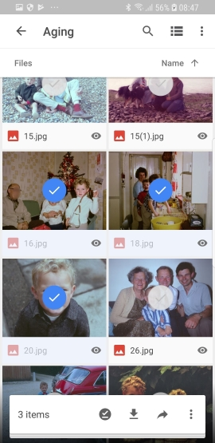
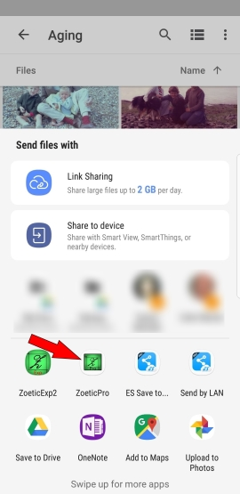
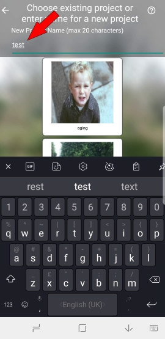
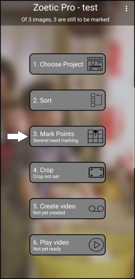
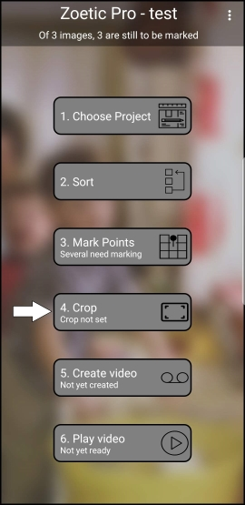
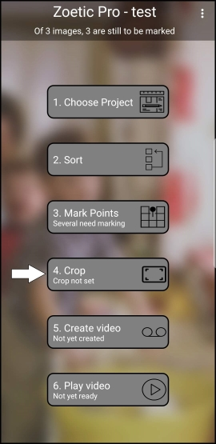
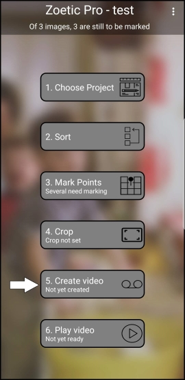
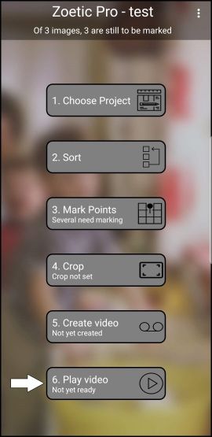
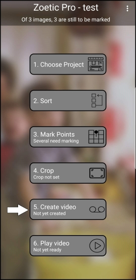
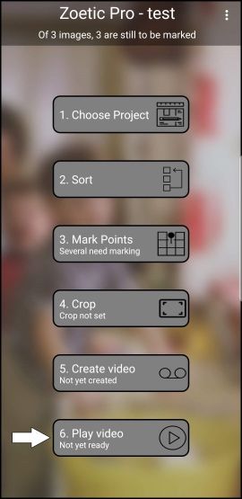

Choose images from your favourite gallery/photo app and share them with Zoetic:
 Once the images have been received by Zoetic, enter a name for the project:
 From Zoetic's main screen, tap Mark Points and then for each image enter the two alignment points. If you are using images of faces, you can use the eye detection function to automatically enter the alignment points (n.b. it doesn't always work):  Once the images have been marked, tap Crop to specify the area of the images to be used to generate the video:

Once the images have been marked, tap Crop to specify the area of the images to be used to generate the video:

 Finally, tap Create Video to create the video and Play Video to enjoy the results:


Finally, tap Create Video to create the video and Play Video to enjoy the results:


A video showing an expanded set of these steps can be found here. The output generated by the project can be found at this point in the video.